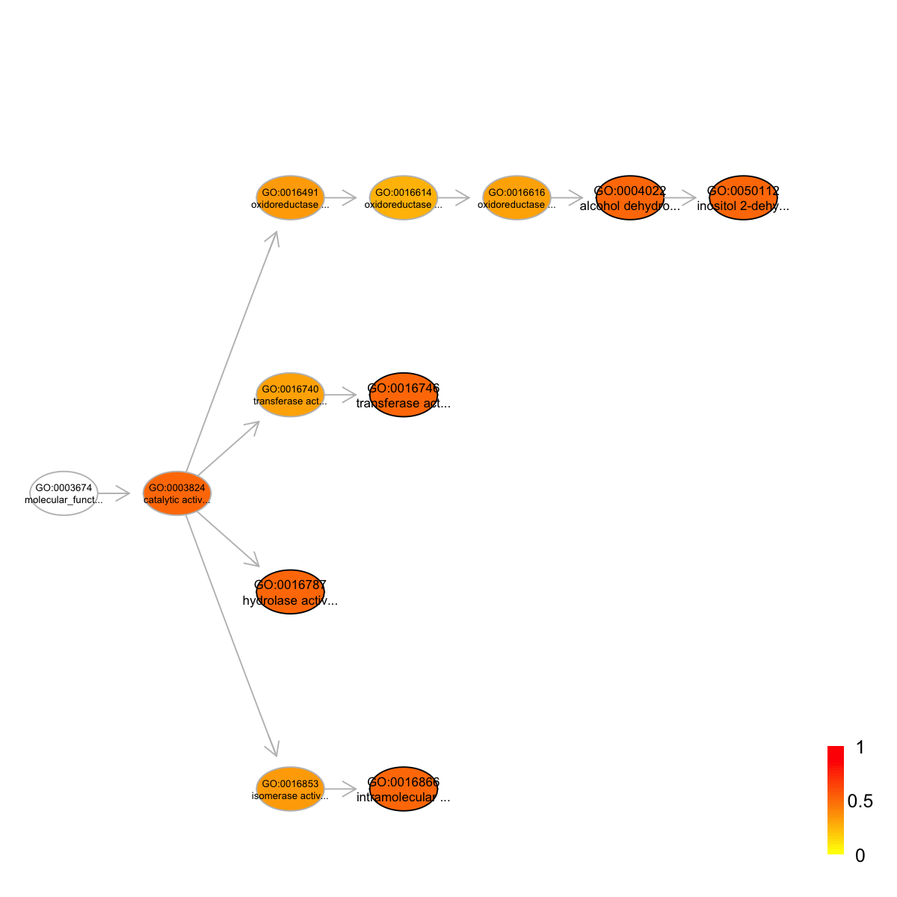
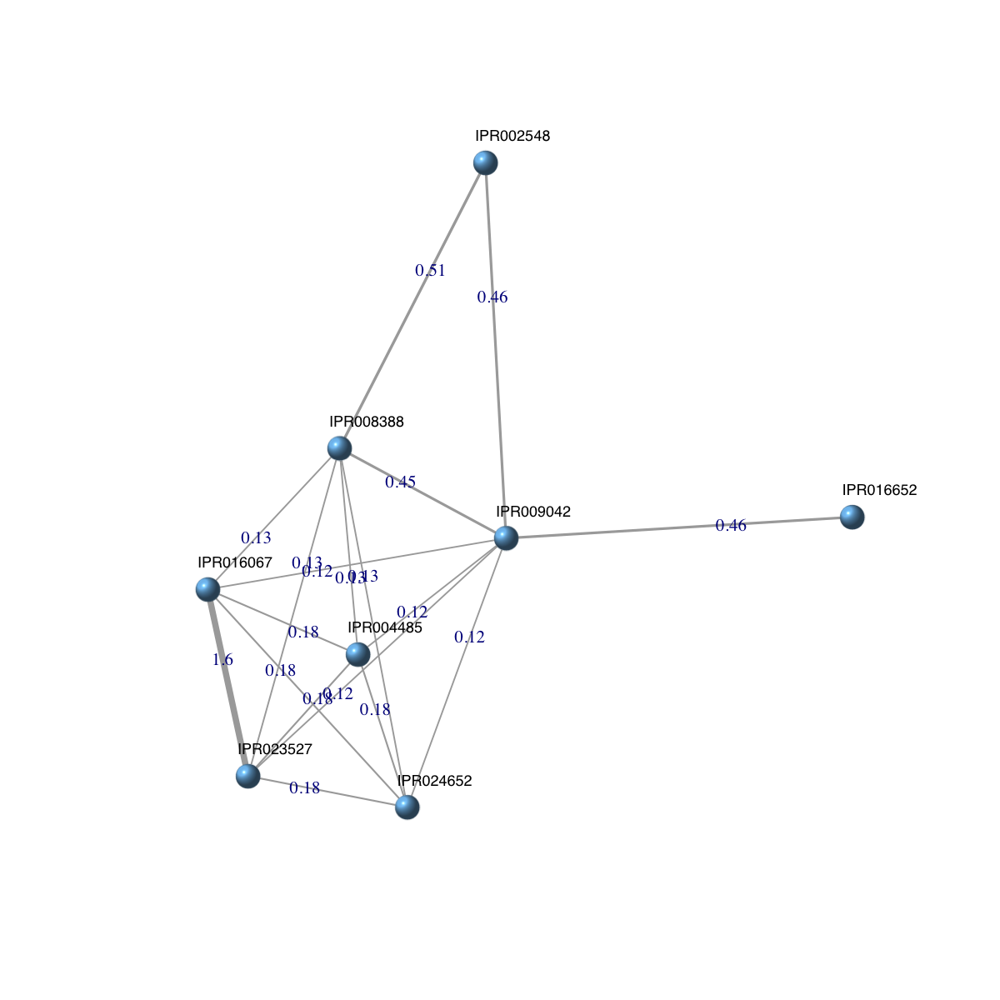

An object of S4 class 'InfoDataFrame' has been built and saved into '/Users/hfang/Sites/SUPERFAMILY/dcGO/dcGOR/domain.RData'.
domain
An object of S4 class 'InfoDataFrame'
rowNames: IPR000003 IPR000006 IPR000008 ... IPR029784 IPR029785
(11638 total)
colNames: id level description
An object of S4 class 'Onto' has been built and saved into '/Users/hfang/Sites/SUPERFAMILY/dcGO/dcGOR/ontology.RData'.
g
An object of S4 class 'Onto'
@adjMatrix: a direct matrix of 9595 terms (parents/from) X 9595 terms (children/to)
@nodeInfo (InfoDataFrame)
nodeNames: GO:0003674 GO:0000988 GO:0001071 ... GO:0004008 GO:0086037
(9595 total)
nodeAttr: term_id term_name term_namespace term_distance
An object of S4 class 'Anno' has been built and saved into '/Users/hfang/Sites/SUPERFAMILY/dcGO/dcGOR/annotations.RData'.
Anno
An object of S4 class 'Anno'
@annoData: 8899 domains, 2219 terms
@termData (InfoDataFrame)
termNames: GO:0001071 GO:0003824 GO:0004872 ... GO:0015467 GO:0072345
(2219 total)
tvarLabels: ID Name Namespace Distance
@domainData (InfoDataFrame)
domainNames: IPR000003 IPR000006 IPR000008 ... IPR029784 IPR029785
(8899 total)
dvarLabels: id level description
## In your working directory, you should see three RData-formatted files: "domain.RData", "ontology.RData", "annotations.RData"
#---------------------------------------------------------------------------
#---------------------------------------------------------------------------
# Enrichment analysis
#---------------------------------------------------------------------------
#---------------------------------------------------------------------------
## prepare data and background for enrichment analysis
### randomly select 100 domains as a list of domains of interest
data <- sample(rowNames(domain), 100)
length(data)
[1] 100
### randomly select 1000 domains as background
background <- sample(rowNames(domain), 1000)
length(background)
[1] 1000
Start at 2015-07-23 12:18:56
First, load customised ontology 'ontology.RData', the domain 'domain.RData', and their associations 'annotations.RData' (2015-07-23 12:18:56)...
Second, perform enrichment analysis using HypergeoTest (2015-07-23 12:19:14) ...
There are 140 terms being used, each restricted within [10,1000] annotations
Last, adjust the p-values using the BH method (2015-07-23 12:19:14) ...
End at 2015-07-23 12:19:14
Runtime in total is: 18 secs
eoutput
An object of S4 class 'Eoutput', containing following slots:
@domain: 'domain.RData'
@ontology: 'ontology.RData'
@term_info: a data.frame of 65 terms X 5 information
@anno: a list of 65 terms, each storing annotated domains
@data: a vector containing a group of 73 input domains (annotatable)
@background: a vector containing a group of 830 background domains (annotatable)
@overlap: a list of 65 terms, each containing domains overlapped with input domains
@zscore: a vector of 65 terms, containing z-scores
@pvalue: a vector of 65 terms, containing p-values
@adjp: a vector of 65 terms, containing adjusted p-values
In summary, a total of 65 terms ('ontology.RData') are analysed for a group of 73 input domains ('domain.RData')
## view the top 10 significance terms
view(eoutput, top_num=10, sortBy="pvalue", details=FALSE)
term_id nAnno nGroup nOverlap zscore pvalue adjp
GO:0016866 GO:0016866 11 73 3 2.18 0.011 0.3
GO:0050112 GO:0050112 20 73 4 1.79 0.025 0.3
GO:0016787 GO:0016787 112 73 15 1.85 0.026 0.3
GO:0016746 GO:0016746 14 73 3 1.68 0.028 0.3
GO:0004022 GO:0004022 21 73 4 1.68 0.031 0.3
GO:0015002 GO:0015002 38 73 6 1.56 0.042 0.3
GO:0004518 GO:0004518 16 73 3 1.42 0.044 0.3
GO:0016817 GO:0016817 31 73 5 1.47 0.047 0.3
GO:0016818 GO:0016818 31 73 5 1.47 0.047 0.3
GO:0016462 GO:0016462 31 73 5 1.47 0.047 0.3
term_name
GO:0016866 intramolecular transferase activity
GO:0050112 inositol 2-dehydrogenase activity
GO:0016787 hydrolase activity
GO:0016746 transferase activity, transferring acyl groups
GO:0004022 alcohol dehydrogenase (NAD) activity
GO:0015002 heme-copper terminal oxidase activity
GO:0004518 nuclease activity
GO:0016817 hydrolase activity, acting on acid anhydrides
GO:0016818 hydrolase activity, acting on acid anhydrides, in phosphorus-containing anhydrides
GO:0016462 pyrophosphatase activity
Ontology 'ontology.RData' containing 12 nodes/terms (including 5 in query; also highlighted in frame) has been shown in your screen, with colorbar indicating -1*log10(adjusted p-values)

An object of S4 class 'Onto'
@adjMatrix: a direct matrix of 2578 terms (parents/from) X 2578 terms (children/to)
@nodeInfo (InfoDataFrame)
nodeNames: GO:0003674 GO:0000988 GO:0001071 ... GO:0015272 GO:0015467
(2578 total)
nodeAttr: term_id term_name term_namespace term_distance annotations
IC
Start at 2015-07-23 12:19:46
First, extract all annotatable domains (2015-07-23 12:19:46)...
there are 8 input domains amongst 8899 annotatable domains
Second, pre-compute semantic similarity between 11 terms (forced to be the most specific for each domain) using Resnik method (2015-07-23 12:19:47)...
Last, calculate pair-wise semantic similarity between 8 domains using BM.average method (2015-07-23 12:19:47)...
1 out of 8 (2015-07-23 12:19:48)
2 out of 8 (2015-07-23 12:19:48)
3 out of 8 (2015-07-23 12:19:48)
4 out of 8 (2015-07-23 12:19:48)
5 out of 8 (2015-07-23 12:19:48)
6 out of 8 (2015-07-23 12:19:48)
7 out of 8 (2015-07-23 12:19:48)
Finish at 2015-07-23 12:19:48
Runtime in total is: 2 secs
dnetwork
An object of S4 class 'Dnetwork'
@adjMatrix: a weighted symmetric matrix of 8 domains X 8 domains
@nodeInfo (InfoDataFrame)
nodeNames: IPR024652 IPR009042 IPR023527 ... IPR016067 IPR004485 (8
total)
nodeAttr: id
Your input object 'dnetwork' of class 'Dnetwork' has been converted into an object of class 'igraph'.
ig
IGRAPH UNW- 8 18 --
+ attr: name (v/c), id (v/c), weight (e/n)
+ edges (vertex names):
[1] IPR024652--IPR009042 IPR024652--IPR023527 IPR009042--IPR023527
[4] IPR024652--IPR008388 IPR009042--IPR008388 IPR023527--IPR008388
[7] IPR009042--IPR002548 IPR008388--IPR002548 IPR009042--IPR016652
[10] IPR024652--IPR016067 IPR009042--IPR016067 IPR023527--IPR016067
[13] IPR008388--IPR016067 IPR024652--IPR004485 IPR009042--IPR004485
[16] IPR023527--IPR004485 IPR008388--IPR004485 IPR016067--IPR004485
## visualise the domain network
### extract edge weight (with 2-digit precision)
x <- signif(E(ig)$weight, digits=2)
### rescale into an interval [1,4] as edge width
edge.width <- 1 + (x-min(x))/(max(x)-min(x))*3
### do visualisation
dnet::visNet(g=ig, vertex.shape="sphere", edge.width=edge.width, edge.label=x, edge.label.cex=0.7)

){kind=link}
){kind=link}